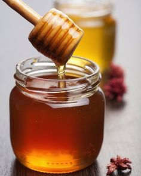

Hair Loss Home Remedies
Aloe Vera Gel
Aloe vera contains enzymes that promote hair growth and can help reduce scalp inflammation, which may contribute to hair loss.
Extract fresh aloe vera gel from an aloe vera leaf.
Apply the gel directly onto your scalp and massage gently for a few minutes to ensure it's evenly distributed.
Leave the gel on your scalp for about 30-45 minutes to allow it to penetrate the hair follicles.
Rinse your hair with lukewarm water.
Massage this oil onto your scalp and hair, focusing on areas with graying hair.
You can repeat this process 2-3 times a week for potential benefits in reducing hair loss and promoting healthier hair growth.

Onion Juice and Honey Treatment
Onion juice is rich in sulfur, which can improve blood circulation to the hair follicles and stimulate hair regrowth.
Honey has moisturizing properties and can help nourish the scalp.
Blend or grate an onion to extract its juice.
Mix equal parts of onion juice and honey in a bowl.
Apply this mixture to your scalp and hair, focusing on areas where hair loss is prominent.
Leave it on for about 30-45 minutes before rinsing it off with a mild shampoo and lukewarm water.
You can use this treatment 1-2 times a week for potential benefits in reducing hair loss and promoting hair growth.